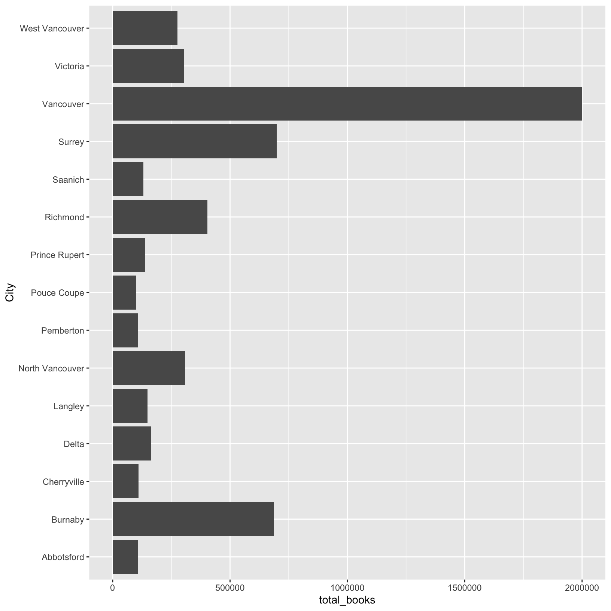
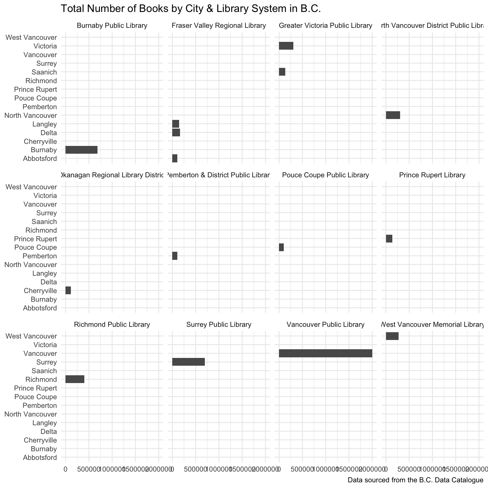
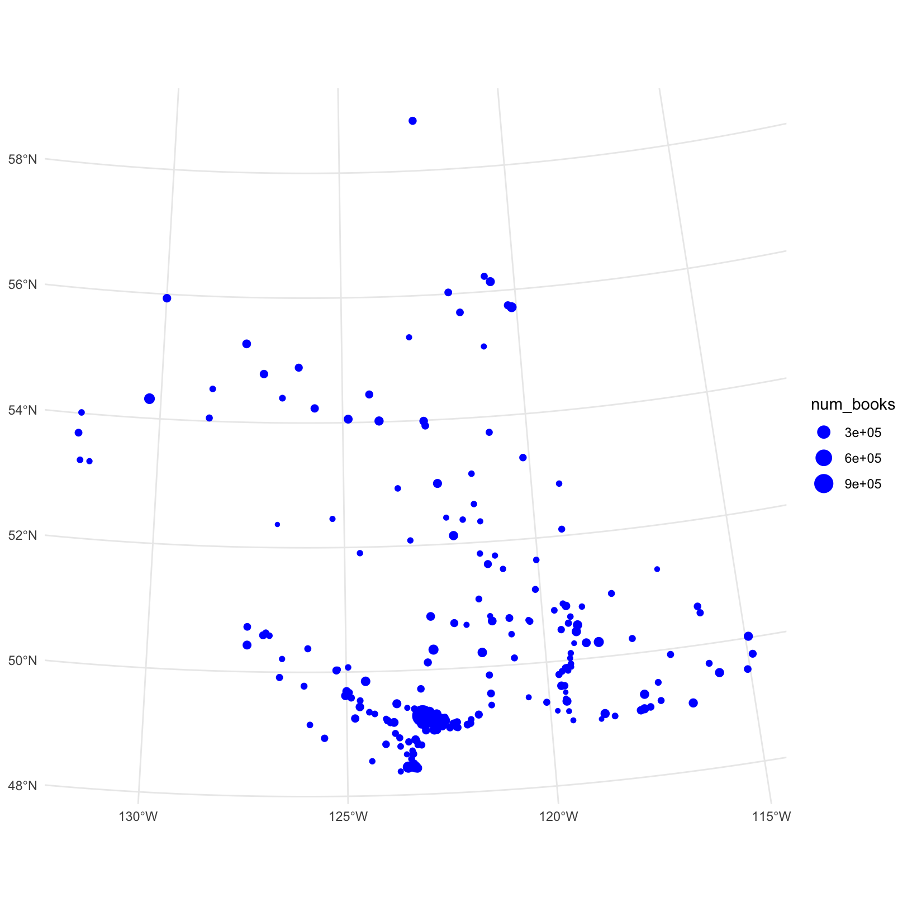

Chapter 9 Introduction to the bcdata package
The bcdata R package contains functions for searching & retrieving data directly from the B.C. Data Catalogue.
9.1 Getting started
First we need to install the bcdata package:
install.packages("bcdata")And next we need to load the bcdata package, along with dplyr and ggplot2 which we installed and used in earlier lessons:
library(bcdata)
Attaching package: 'bcdata'The following object is masked from 'package:stats':
filterlibrary(dplyr)
library(ggplot2)9.2 Searching the B.C. Data Catalogue
Let’s use the bcdata package to search the B.C. Data Catalogue for some data on public libraries in British Columbia:
bcdc_search("public libraries")List of B.C. Data Catalogue Records
Number of records: 16
(Showing the top 10)
Titles:
1: BC Public Libraries Statistics 2002-Present (xls, xlsx, csv)
ID: d03007d6-d6c7-44d7-b2f8-710ba9433617
Name: bc-public-libraries-statistics-2002-present
2: BC Public Libraries Systems - Branches and Locations (multiple, csv,
xlsx, kml, wms)
ID: 3d2318d4-8f5d-4208-88f5-995420d7c58f
Name: bc-public-libraries-systems-branches-and-locations
3: BC Web Map Library (kml, wms)
ID: 6164a2af-d3ac-4e92-8dbe-51a93bb5e24b
Name: bc-web-map-library
4: Environmental Protection Information Resources e-Library (other)
ID: dae0f2c3-b4f4-4d16-a96d-d7fe7c1581f3
Name: environmental-protection-information-resources-e-library
5: Biodiversity/Environmental Information Resources e-Library (html)
ID: a77d4986-91a1-42fc-8e5c-51a304c7975e
Name: biodiversity-environmental-information-resources-e-library
6: BC Geological Survey Publications Catalogue (html, csv)
ID: 5f6d0659-f042-4552-9f23-8d92a9045328
Name: bc-geological-survey-publications-catalogue
7: BC Laws API (html, openapi-json, json)
ID: 6e815cf7-cb83-4655-9ad4-a926ae4e59f7
Name: bc-laws-api
8: Ecological Catalogue (formerly AquaCat) (multiple, wms, kml)
ID: 7904d8e9-64b4-4acc-89f1-70a42bc1da6e
Name: ecological-catalogue-formerly-aquacat
9: Terrestrial Ecosystem Information (TEI) Data Distribution Packages
(other)
ID: 8fd15e4e-e7b1-4566-81d1-1ff8947bfd46
Name: terrestrial-ecosystem-information-tei-data-distribution-packages
10: Predictive Ecosystem Mapping (PEM) Detailed Polygons with Short
Attribute Table - 20,000 Spatial View (fgdb)
ID: b9b3145e-f7f4-4150-a331-1334d3c38576
Name:
predictive-ecosystem-mapping-pem-detailed-polygons-with-short-attribute-table-20-000-spatial-view
Access a single record by calling `bcdc_get_record(ID)` with the ID
from the desired record.There are many catalogue records with data relating to libraries. Let’s examine the first returned record more closely:
bcdc_get_record("bc-public-libraries-systems-branches-and-locations")Warning: It is advised to use the permanent id ('3d2318d4-8f5d-4208-88f5-995420d7c58f') rather than the name of the record ('bc-public-libraries-systems-branches-and-locations') to guard against future name changes.B.C. Data Catalogue Record: BC Public Libraries Systems - Branches and
Locations
Name: bc-public-libraries-systems-branches-and-locations (ID:
3d2318d4-8f5d-4208-88f5-995420d7c58f)
Permalink:
https://catalogue.data.gov.bc.ca/dataset/3d2318d4-8f5d-4208-88f5-995420d7c58f
Licence: Open Government Licence - British Columbia
Description: This dataset includes contact and location data for all
library service points in BC. It also includes some primary data on
library use and services from the most current year that data is
available.
The dataset is geolocational, and is available in XLSX,
CSV, and KML formats.
Available Resources (5):
1. BC Public Library Service Points (csv)
2. 2018 BC Public Library Systems - Locations and Branch Data (XLS) - v19 (xlsx)
3. 2018 BC Public Library Systems - Locations and Branch Data (CSV) - v19 (csv)
4. 2015 BC Public Library Systems - Locations and Branch Data 1.2 (KML) (kml)
5. WMS getCapabilities request (wms)
Access the full 'Resources' data frame using:
bcdc_tidy_resources('3d2318d4-8f5d-4208-88f5-995420d7c58f')
Query and filter this data using:
bcdc_query_geodata('3d2318d4-8f5d-4208-88f5-995420d7c58f')9.3 Importing data from the B.C. Data Catalogue
Next, we can use the bcdc_get_data function to import this data directly into R:
bcdc_get_data(record = "bc-public-libraries-systems-branches-and-locations")The bc-public-libraries-systems-branches-and-locations catalogue record contains multiple data resources or files. If we run the above code interactively, R will prompt you in the console to select one of the available resources, as it does not know which one you want to download. The full code to import the resource from the record—using the record’s permanent id to guard against future name changesname—is provided to the user for next time:
lib_raw <- bcdc_get_data('3d2318d4-8f5d-4208-88f5-995420d7c58f',
resource = 'ed17f111-fb39-46b3-89aa-5375592fbb01')Reading the data using the read_xlsx function from the readxl package.Challenge 1 (5 minutes)
Take a few minutes to search the B.C. Data Catalogue for data sets for a different topic. Identify and import one tabular data set into your R session > (e.g. a CSV or XLS resource).
9.4 Practice manipulating data with dplyr
Let’s return to the libraries data frame lib-raw we imported. As we learned earlier in the workshop, a useful first step is to get familiar with the data:
str(lib_raw)tibble [253 × 38] (S3: tbl_df/tbl/data.frame)
$ Library System : chr [1:253] "Alert Bay Public Library & Museum" "Beaver Valley Public Library" "Bowen Island Public Library" "Burnaby Public Library" ...
$ Location : chr [1:253] "Alert Bay Public Library & Museum" "Beaver Valley Public Library" "Bowen Island Public Library" "Bob Prittie Metrotown Branch" ...
$ 1x Branch Unique ID : chr [1:253] "BABM001" "BFBV001" "BBI001" "BB001" ...
$ School District Served : chr [1:253] "85" "20" "45" "41" ...
$ Phone : chr [1:253] "(250) 974-5721" "(250) 367-7114" "(604) 947-9788" "(604) 436-5427" ...
$ Physical Address : chr [1:253] "116 Fir Street" "1847 - 1st Street" "430 Bowen Island Trunk" "6100 Willingdon Avenue" ...
$ City : chr [1:253] "Alert Bay" "Fruitvale" "Bowen Island" "Burnaby" ...
$ Province : chr [1:253] "BC" "BC" "BC" "BC" ...
$ Postal Code : chr [1:253] "V0N 1A0" "V0G 1L0" "V0N 1G0" "V5H 4N5" ...
$ Latitude : num [1:253] 50.6 49.1 49.4 49.2 49.3 ...
$ Longitude : num [1:253] -127 -118 -123 -123 -123 ...
$ 460x Total branch physical materials, volumes held : num [1:253] 9361 25477 15100 373232 59958 ...
$ 556x Branch circulation of print and other physical materials: num [1:253] 2460 19792 36155 1139184 454254 ...
$ 565x Branch circulation of children's materials : chr [1:253] "193" "4737" "15964" "476345" ...
$ 610x Branch reference transactions : chr [1:253] "1700" "10000" "8217" "107784" ...
$ 775x In person visits to this branch or service point : chr [1:253] "3522" "14750" "52690" "749695" ...
$ 680x Branch in-library adult programs : chr [1:253] "0" "8" "499" "58" ...
$ 682x Branch outreach adult programs : chr [1:253] "1" "2" "0" "101" ...
$ 690x Attendance at adult programs : chr [1:253] "22" "202" "1381" "3865" ...
$ 700x Branch in-library children's programs : chr [1:253] "0" "100" "94" "402" ...
$ 702x Branch outreach children's programs : chr [1:253] "3" "10" "5" "39" ...
$ 710x Attendance at children's programs : chr [1:253] "235" "1208" "1224" "19522" ...
$ 715x Branch in-library young adult programs : chr [1:253] "0" "0" "0" "12" ...
$ 717x Branch outreach young adult programs : chr [1:253] "0" "0" "0" "84" ...
$ 716x Attendance at young adult programs : chr [1:253] "0" "0" "0" "2923" ...
$ 671x Branch in-library newcomer/ELL programs, all ages : chr [1:253] "0" "0" "0" "26" ...
$ 673x Branch outreach newcomer/ELL programs, all ages : chr [1:253] "0" "0" "0" "0" ...
$ 672x Attendance at branch newcomer/ELL programs : chr [1:253] "0" "0" "0" "528" ...
$ 740x Professional Librarians, hours worked at this branch : chr [1:253] "0" "0" "1820" "42224" ...
$ 742x Library Technicians, hours worked at this branch : chr [1:253] "0" "0" "0" "1733" ...
$ 752x Community Librarians, hours worked at this branch : chr [1:253] "622" "4940" "0" NA ...
$ 770x Other Staff, hours worked at this branch : chr [1:253] "281" "1350" "4107" "104199" ...
$ 975x Number of photocopiers in library branch : num [1:253] 1 1 1 4 1 1 1 2 1 1 ...
$ 852x Is this location LEED certified? : chr [1:253] NA "No" "No" "No" ...
$ 854x Is this location a Shared Space facility? : chr [1:253] NA "No" "Yes" "No" ...
$ 860x Branch space/size, total square metres : num [1:253] 213 270 407 5673 465 ...
$ 890x Hours open per year at this location : chr [1:253] "618" "2320" "1953" "3612" ...
$ 920x Days open per year at this location : chr [1:253] "191" "321" "303" "339" ...names(lib_raw) [1] "Library System"
[2] "Location"
[3] "1x Branch Unique ID"
[4] "School District Served"
[5] "Phone"
[6] "Physical Address"
[7] "City"
[8] "Province"
[9] "Postal Code"
[10] "Latitude"
[11] "Longitude"
[12] "460x Total branch physical materials, volumes held"
[13] "556x Branch circulation of print and other physical materials"
[14] "565x Branch circulation of children's materials"
[15] "610x Branch reference transactions"
[16] "775x In person visits to this branch or service point"
[17] "680x Branch in-library adult programs"
[18] "682x Branch outreach adult programs"
[19] "690x Attendance at adult programs"
[20] "700x Branch in-library children's programs"
[21] "702x Branch outreach children's programs"
[22] "710x Attendance at children's programs"
[23] "715x Branch in-library young adult programs"
[24] "717x Branch outreach young adult programs"
[25] "716x Attendance at young adult programs"
[26] "671x Branch in-library newcomer/ELL programs, all ages"
[27] "673x Branch outreach newcomer/ELL programs, all ages"
[28] "672x Attendance at branch newcomer/ELL programs"
[29] "740x Professional Librarians, hours worked at this branch"
[30] "742x Library Technicians, hours worked at this branch"
[31] "752x Community Librarians, hours worked at this branch"
[32] "770x Other Staff, hours worked at this branch"
[33] "975x Number of photocopiers in library branch"
[34] "852x Is this location LEED certified?"
[35] "854x Is this location a Shared Space facility?"
[36] "860x Branch space/size, total square metres"
[37] "890x Hours open per year at this location"
[38] "920x Days open per year at this location" Let’s tidy up this data frame and find out how many books—physical materials or volumes—are available within each City:
library(dplyr)
lib_tidy <- lib_raw %>%
select(`Library System`, Location, City, num_books = "460x Total branch physical materials, volumes held")
sum_books <- lib_tidy %>%
group_by(City, `Library System`) %>%
summarize(total_books = sum(num_books))`summarise()` has grouped output by 'City'. You can override using the `.groups` argument.Challenge 2 (10 minutes)
Using
dplyr, determine the total number of books within each Library System in British Columbia.Solution Challenge 2 (10 minutes)
sum_books %>% group_by(`Library System`) %>% summarize(totals = sum(total_books))# A tibble: 71 × 2 `Library System` totals <chr> <dbl> 1 Alert Bay Public Library & Museum 9361 2 Beaver Valley Public Library 25477 3 Bowen Island Public Library 15100 4 Burnaby Public Library 687751 5 Burns Lake Public Library 44271 6 Cariboo Regional District Library System 254006 7 Castlegar & District Public Library 75228 8 Chetwynd Public Library 28674 9 Coquitlam Public Library 87878 10 Cranbrook Public Library 71823 # … with 61 more rows
9.5 Practice plotting data with ggplot2
Now that we have imported, tidied, and summarized our library data, let’s make a static data visualization to share and communicate the results with others.
library(ggplot2)
sum_books %>%
ggplot(aes(total_books, City)) +
geom_col()
sum_books %>%
filter(total_books > 100000) %>%
ggplot(aes(total_books, City)) +
geom_col()
Challenge 3 (10 minutes)
Iterate the above plot to include information on the number of books by Library Service. Add a title to the plot. Try other design changes to make the plot more readable.
Solution Challenge 3 (10 minutes)
library(ggplot2) sum_books %>% filter(total_books > 100000) %>% ggplot(aes(total_books, City)) + geom_col() + facet_wrap(vars(`Library System`)) + theme_minimal() + labs(x = NULL, y = NULL, title = "Total Number of Books by City & Library System in B.C.", caption = "Data sourced from the B.C. Data Catalogue")
9.6 Using bcdata with spatial data in the B.C. Data Catalogue
The bcdata package also has a function for querying and importing geospatial data from the B.C. Data Catalogue. Let’s import the spatial data file from the catalogue record, and combine the spatial data with our tidy library data frame:
lib_spatial <- bcdc_query_geodata("bc-public-libraries-systems-branches-and-locations") %>%
collect()
lib_all <- lib_spatial %>%
left_join(lib_tidy,
by = c("SERVICE_POINT_NAME" = "Location")) %>%
select(SERVICE_POINT_NAME, num_books) Now we can use ggplot2 and the geom_sf() function to make a static map, or some of R’s other spatial packages to make interactive maps:
lib_all %>%
ggplot() +
geom_sf(aes(size = num_books), colour = "blue") +
theme_minimal()
mapview::mapview(lib_all)Warning: multiple methods tables found for 'direction'Warning: multiple methods tables found for 'gridDistance'